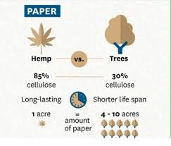
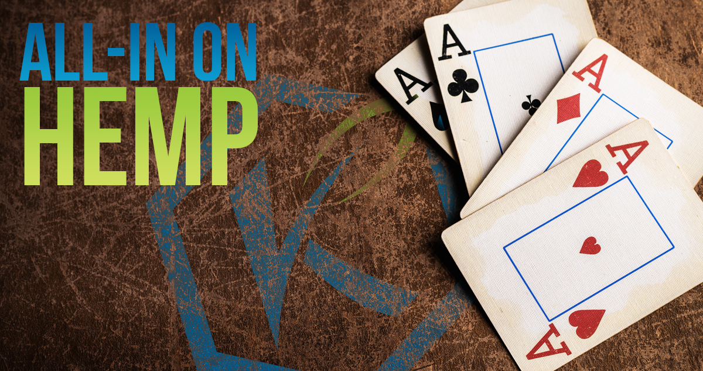
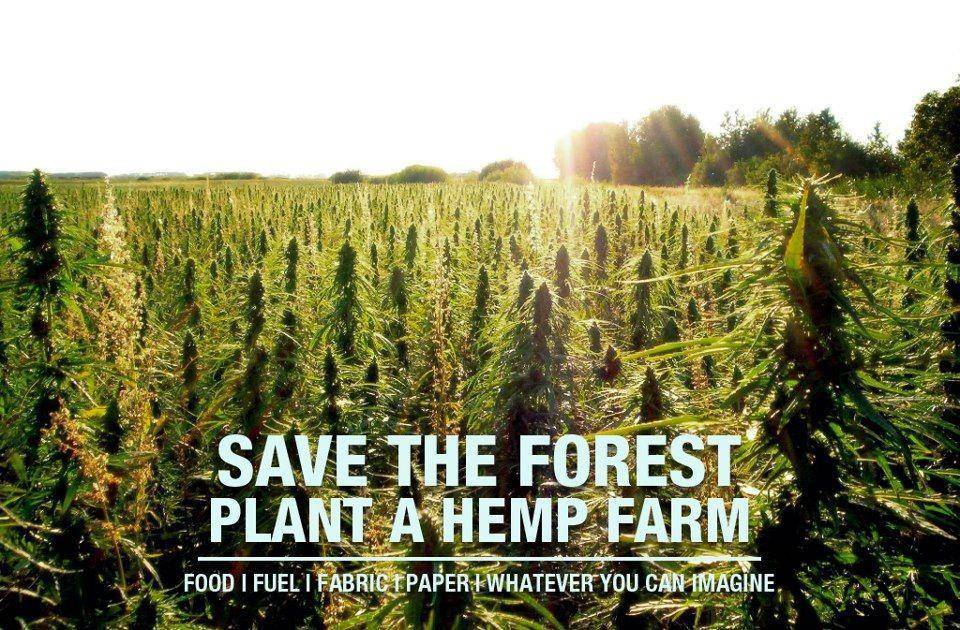
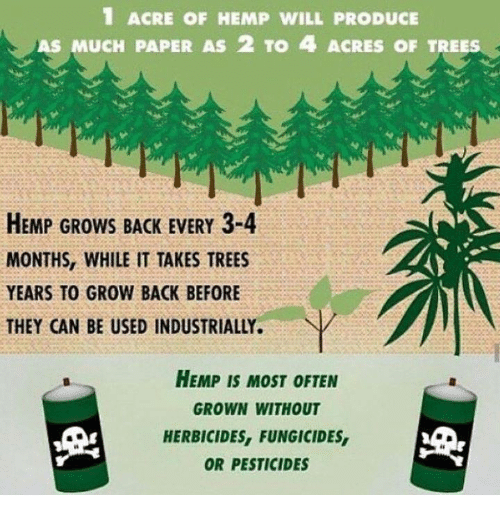
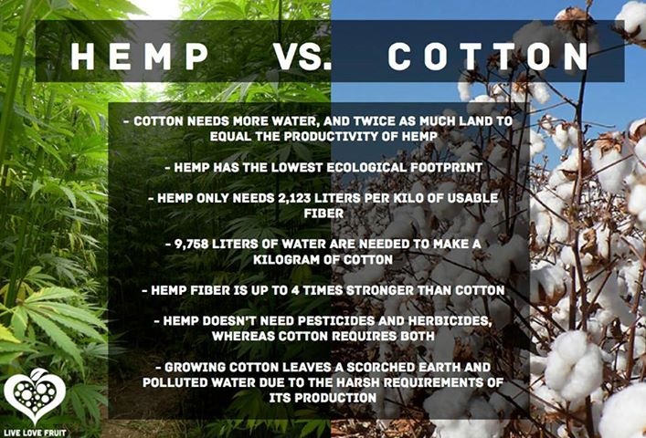
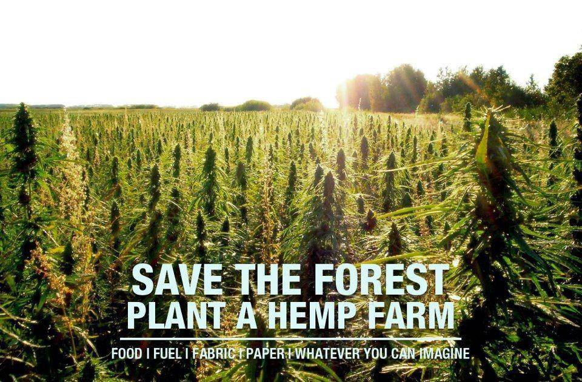
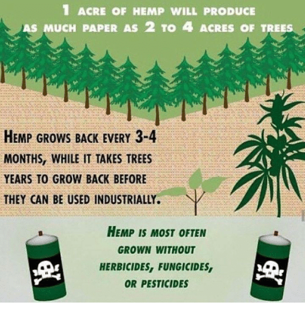
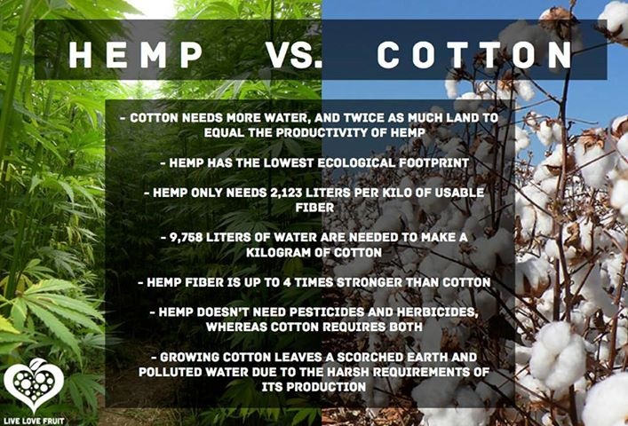

WE’RE MORE THAN A PAPER COMPANY... At Munder Difflin, we are all about the paper- tree free paper. We offer both handmade paper and machine made hemp paper. We offer these in different sizes including notebook or art book style hemp books already made to go. These are made from our fine tactile seed embedded paper that we are known for throughout the world. We believe in this age of electronic communication, nothing can replace the heartfelt sentiment of a personal note or the contemplative process of putting pen to paper in your journal or sketch book. Our hemp or seeded paper can accomplish just that. Today, many people find themselves fretting about how the environment is being destroyed while our resources are being used up and in "x" amount of years, they wont be available for future generations to enjoy the benefits of. There is, however, a resource that has great potential for saving us from our "Impending Doom". This savior resource is hemp. It is definitely the most versatile, and renewable natural resource we currently have at our disposal. It has seen massive amounts of use through out human history and has only recently (within the 20th century) been made illegal for us to grow in the US.
  




